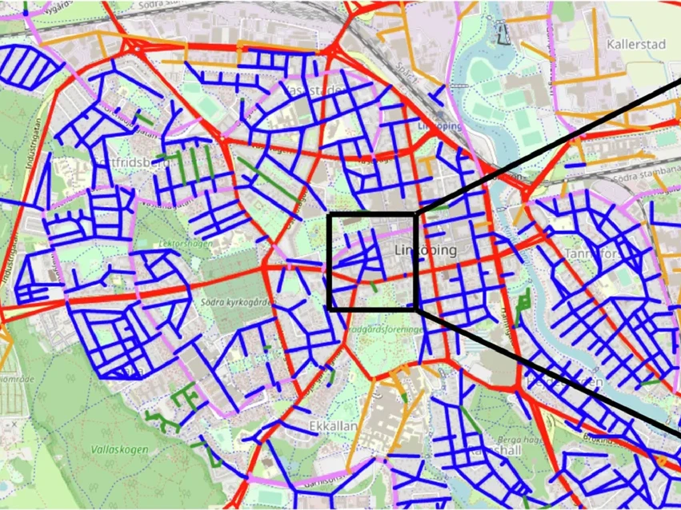
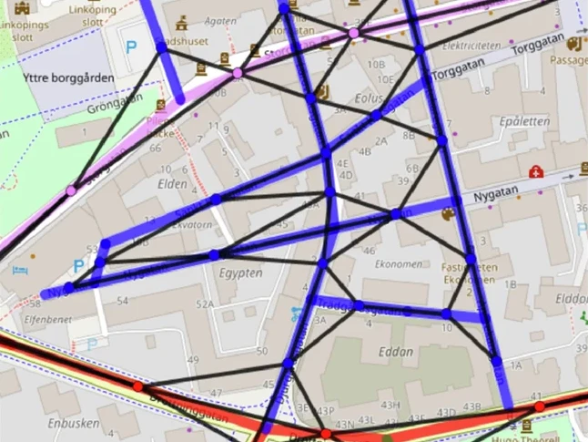

What kind of road is this?
The question
Can a model tell what kind of road a street is, from a highway to a living street, by how it connects to the roads around it, even where map labels are missing?
A street network
HighwayLiving street
Background
Knowing whether a road is a highway, a residential street or a living street matters for routing, autonomous driving and urban planning. Road type depends not only on a segment's own shape and speed limit, but on how it connects to the network around it, which makes it a natural problem for graph learning.
Road networks have been modelled in three ways: procedural methods that grow roads from hand-written rules, example-based methods that extract templates and statistics from real maps, and, most recently, learning-based methods built on deep networks and graphs.
Graph neural networks such as GCN, GraphSAGE, GAT and GIN learn a representation for each node by aggregating information from its neighbours. They rely on node features, but in a road network the useful information sits on the edges, the road segments themselves. Earlier work on road graphs, the Relational Fusion Network, used a dual graph for binary speed-limit classification in a single supervised setting.
Labels in OpenStreetMap are often missing or wrong, so learning road types without labels, and transferring what is learned from well-labelled cities to sparsely labelled ones, matters in practice.
Attention meets isomorphism
Standard road graphs treat intersections as nodes and roads as edges, but most graph neural networks learn from node features, and intersections carry little information. GAIN flips the representation so that the roads themselves become the nodes.
Road graph
Intersections are the dots; roads are the lines between them.
Line graph
Roads become the dots, linked when they share an intersection.
How it works
- 1Flip the graphTurn the road graph into its line graph, so roads become nodes.
- 2Describe roadsGive each road its length, position, shape and speed limit.
- 3Gather neighboursNear roads within a radius, and far, related ones by a random walk.
- 4Weigh and sumWeight neighbours by attention, sum them, and update the road with a small network.
GAIN learns with road-type labels (supervised) or without them, using a graph-based loss (unsupervised).
Where GAIN stands
Road networks of 17 Swedish cities were taken from OpenStreetMap, each road labelled with one of five types, from highways to living streets. GAIN is tested on one city and on cities it has never seen, with and without labels.
Linköping

City
Close-upF1, level with the best method and 37% above raw road features (0.59)
The largest gain of the four settings
F1, the best of all methods; the next best scores 0.69
Learning from the road graph adds 0.12
F1 with labels on two cities never seen in training; GraphSAGE-mean reaches 0.60
Trained on 13, validated on 2, tested on 2
F1: how well road types are predicted, from 0 to 1; higher is better. A random guess scores 0.20.
GAIN against raw road features
Raw features is a simple baseline: it predicts each road's type from that road alone (its length, position, shape and speed limit) and ignores the roads around it. GAIN also learns from the neighbouring roads. The gap between the two bars shows what the road network adds.
- One city (transductive): the model learns on one city's road graph, where some roads have their type hidden, and is tested on those hidden roads in the same city.
- New cities (inductive): the model learns on 13 cities and is tested on 2 other cities it has never seen.
- Labels (supervised): road types are given during training.
- No labels (unsupervised): no road types are given; the model learns only from how roads connect.
F1 in each settingGAINRaw features
Values from the paper's results table.
What I led
- Co-led the project with SCANIA, aligning research with real-world challenges in mobility and infrastructure.
- Curated the dataset: a large-scale road network collection from OpenStreetMap for 17 Swedish cities.
- Conceived and built GAIN, designing the full architecture and leading development, experiments and evaluation.
- Explored graph transformations and sampling in transductive and inductive settings, with an exhaustive grid search.
- Mentored a PhD student, with shared authorship in a peer-reviewed article.
- Presented to academic and industry partners and drove publication in Pattern Recognition.